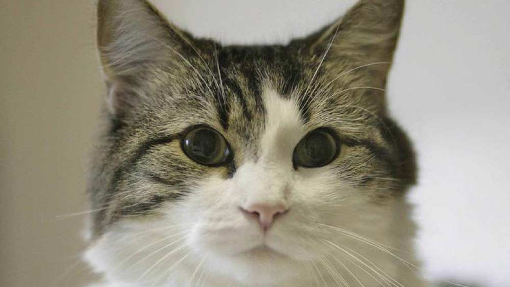

cats food
ats are obligate carnivores, which means that they rely on nutrients found only in animal products. Cats evolved as hunters that consume prey that contains high amounts of protein, moderate amounts of fat, and a minimal amount of carbohydrates, and their diet still requires these general proportions today. Cats also require more than a dozen other nutrients, including vitamins, minerals, fatty acids, and amino acids.
dryfood
Dry food contains between six and 10 percent water. Depending on the specific formulation, a mixture of ingredients are combined, extruded, and dried into bite-sized pieces. Ingredients may include:
meat and/or meat byproducts
poultry and/or poultry byproducts
grain and/or grain byproducts
fish meal
fiber sources
milk products
vitamin and mineral supplements
The pieces of dry food are often then coated with flavor enhancers, such as animal fat, to make the food more appetizing.
Dry cat food is relatively inexpensive, and since it does not dry out, it offers owners the convenience of “free choice” feeding. However, dry food may be less palatable to a cat than moist or semi-moist food, and depending on the types and quality of the ingredients, may also be less digestible. If you do use dry food, it is important to store unused portions in a cool, dry location, and not to use the food after its expiration date. Owners often buy large amounts of dry food that can sometimes be
smart Cats
When evaluating the intelligence of different animal species, we often look at the number of neurons within an animal’s brain.
A 2016 study calculated the number of nerve cells within the cerebral cortex of the brain (the region of the brain that is thought to most directly contribute to intelligence) in a number of different animal species.
Researchers found that cats have nearly twice as many cortical neurons (300 million) as dogs (160 million), which was taken as evidence that cats are smarter than dogs.
While contradictory findings have been observed in other studies, these contradictory studies involved small sample sizes and therefore shouldn’t be taken as the last word on the dog vs. cat intelligence debate. Although a number of studies have been performed, clear, consistent results are currently lacking.
Realistically, it’s important to realize there are significant challenges in calculating exact neuron numbers within the brain of a particular species. Counting neurons is unlikely to ever settle the age-old debate of which species is smarter, cats or dogs?
what is the news for today
the scientest believe that cats smell the death
do you believe that?
it found that hospitalcat can recgonize the people who will die before they ?is it weird right ?
was a therapy cat who as of 2005 lived in the Steere House Nursing and Rehabilitation Center in Providence, Rhode Island, United States. He came to public attention in 2007 when he was featured in an article by geriatrician David Dosa in the New England Journal of Medicine. According to Dosa, Oscar appeared able to predict the impending death of terminally ill patients by choosing to nap next to them a few hours before they died. Hypotheses for this ability include that Oscar was picking up on the lack of movement in such patients or that he could smell biochemicals released by dying cells.[1]
Oscar's abilities were also the subject of Dr. Dosa's 2010 book, Making Rounds with Oscar: The Extraordinary Gift of an Ordinary Cat.[2] Oscar died at the age of 17, on February 22, 2022, accompanied by friends, after a brief illness.[3][4]
follow us to know more crazy catstory...meaw



:strip_icc()/GettyImages-145577979-d97e955b5d8043fd96747447451f78b7.jpg)